Fury-inspired RC:
native loft and initial aero
An eased aft splitter flare and earlier buried cowl overlap. Native inspection views document the junction, retained root blends, and editable internal arrangement.
OpenFOAM mesh development is documented in the CFD mesh supplement. It records surface fidelity, actual layer coverage, and unresolved mesh defects. No aircraft CFD flow solution is complete.
01Form one conic underside and an integrated inlet
The user requested a non-combat RC appearance model that follows the supplied Fury drawing and photographs. The latest bottom-view markup requests a smoother aft splitter merge.
This revision eases the splitter into the local fuselage width and starts the buried cowl overlap before gap closure completes.
The forebody retains the smooth underside arc from the previous front markup. The lower inlet retains its original swept, pointed edge.
The notebook uses longitudinal spline guides, conic surfaces, and implicit-spline sections. The forebody underside uses one conic across both sides. The lip and cheek form one shell.
Result
The sampled gap and passage checks pass, and the recorded visual review is complete.
The photographs guide the exterior lip and diverter gap. The internal cavity is an RC concept and does not reproduce documented production duct geometry.
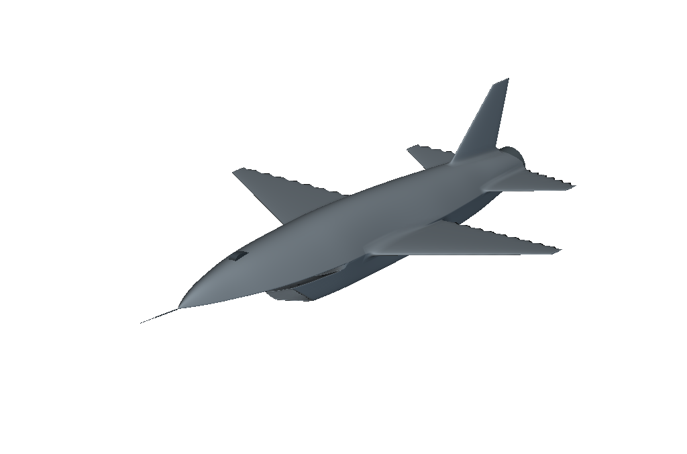
Compare the junction from the flight-photo angle
The model retains the previous 154.1 mm aft wing offset and 0.919057 horizontal-tail span multiplier. This revision eases the aft splitter merge and retains the existing root-blend controls. These are photo-guided RC appearance choices, not production aircraft dimensions.
Recorded native baseline and revised views. The photographic comparison is omitted from this public edition.
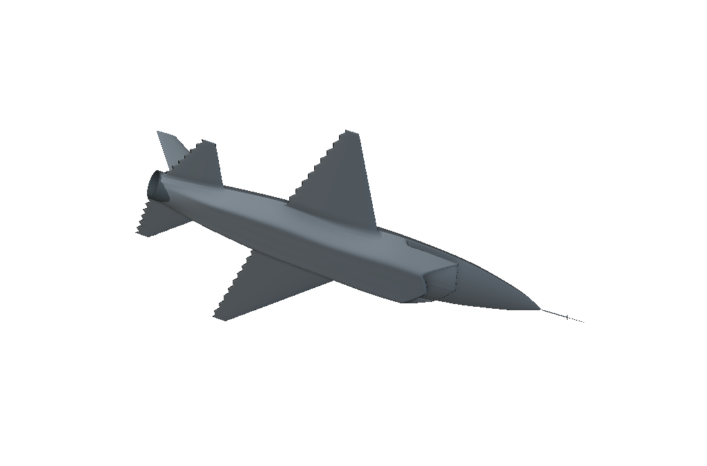
The camera fit uses eight nose and tail landmarks. Seven wing points provide a placement diagnostic. The near wing root leading edge is occluded by the deployed gear and is excluded. The nozzle pick also has greater uncertainty.
The camera-point RMS residual is 5.98 pixels. Historical placement diagnostic: the previous wing-translation trial reduced wing-point RMS from 15.18 to 8.11 pixels. This is not a before/after error measure for the current splitter or junction changes. These values describe the fitted landmark projection, not a screenshot silhouette score. Tail span uses the photograph's wing-to-tail ratio, so the wing diagnostic is not independent validation.
Manual picks, occlusion, perspective, and approximate source geometry limit this comparison. The photographic lens is not calibrated. No percentage likeness is assigned.
Open this camera in nTop
These native Highest Res captures show sampling steps at very thin trailing edges. Exclude those steps from landmark comparisons. They do not establish manufactured edge quality.
An earlier revision set the wing position and horizontal-tail span. Those lifting-surface settings remain unchanged in this junction revision. The wing-root Ramp settings also retain their candidate-thirteen values.
Cowl depth remains uncertain. Gear and shadow obscure its lower photographic edges. The image comparison does not establish an exact aircraft replica or a percentage match.
Reference image retained only in the separate downloadable collection.
The inlet lip forms the forward edge of the upper inlet wall. The lip and cheek use one shell with a rounded outer roof-to-side intersection.
A shared rounded inner cavity defines the inside of that junction. This construction removes the separate lip blank.
A C2 lower envelope constrains the roof using the conic and the fuselage underside translated downward by the gap. C2 means the first and second derivatives remain continuous through the transition.
The new splitter occupies the center of the diverter gap. It joins the inlet roof and the fuselage underside. Lateral passages remain beside it.
The inlet cavity continues through native lofted sections to the existing outlet. The outlet uses the existing center and end plane. The former exhaust back disk is removed.
At the 16 ft baseline, editable lip projection is 183.04 mm and lip thickness is 11.77 mm. The forward center gap is 49.03 mm and outlet radius is 213.11 mm.
The Inlet corner radius control starts at 49.03 mm. These values are RC concept inputs, scaled from normalized model parameters. They are not measured production-aircraft dimensions.
The continuous inlet leading edge uses one rounded intersection. Its rounding input is 0.8 times the inlet lip thickness.
The exterior rear junction retains the prior 255.129 mm forward shift at the 16 ft baseline. The closure runs from source x = -1.770268 to -1.570268. Buried overlap now starts at the closure midpoint, source x = -1.670268. It ends at -1.240268, before wing-blend support starts at -1.164268. Their X-coordinate interval describes field placement, not a measured physical clearance or an open gap. These are RC construction choices; the corresponding photo edge is partly obscured.
The overlap avoids a junction where the bodies only touch at a surface. The swept mouth and outlet positions remain fixed.
The cavity remap uses the guarded roof directly. Its clamped coordinates precede the former rear closure, where that closure had zero weight.
This algebra preserves the intended cavity surface. Fresh native passage fixtures check the resulting geometry after the exterior junction change.
The existing cowl lower surface now limits the forebody solid where the bodies overlap. This intersection removes the narrow oval protrusion found during the previous underside review.
The correction uses the existing cowl implicit spline. It preserves the forward conic construction and inlet lip gap.
The raked inlet face follows the swept upper lip and retains the original swept, pointed lower lip. The editable Inlet face rake control uses a dimensionless factor of 2.3.
This factor is an RC concept parameter. It does not specify a rake angle.
The outlet sleeve extends into the rear fuselage and geometrically closes the junction by overlap. The sampled passage checks do not certify minimum wall thickness.
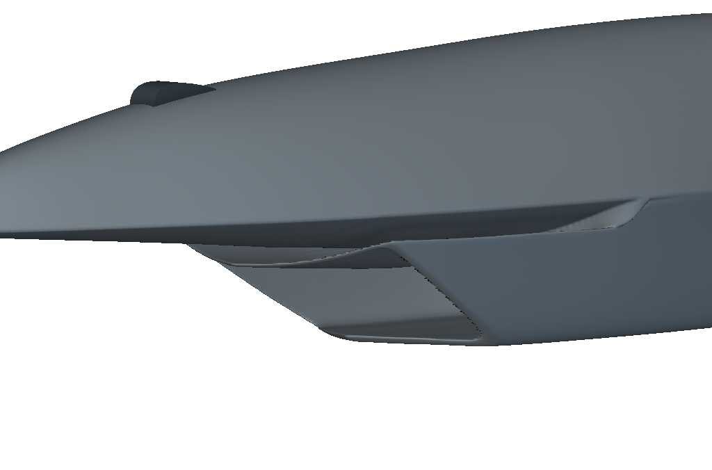
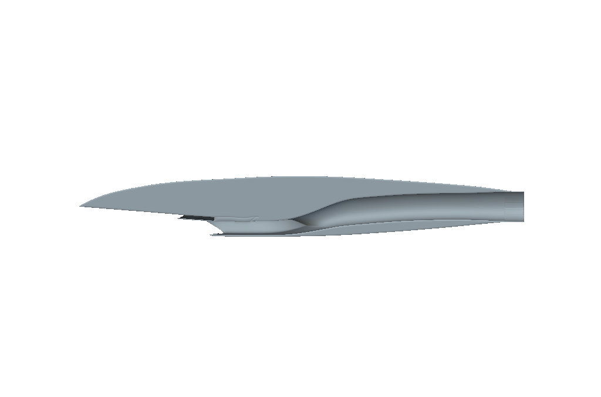
An open cavity is a geometric feature. This revision does not establish correct flow splitting, pressure recovery, mass flow, or engine compatibility.
The photographs do not expose the production duct. The RC internal passage remains a concept for later analysis and installation work.
The forebody underside conic uses signed lateral coordinates across the full width. Its control triangle is A=(-w,0), B=(0,-2d), C=(w,0), with rho=0.5.
Here, w is the local half-width and d is the underside depth. Existing longitudinal width, depth, and chine guides position each section.
This symmetric section replaces the previous broad flat middle and steep shoulder transitions. The inlet roof guard and center-gap splitter follow the new underside.
The user's front markup defines the intended arc. The flight photograph supports the general appearance but does not establish an exact section.
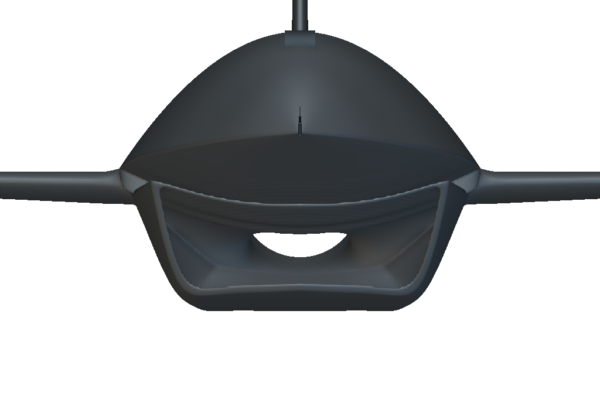
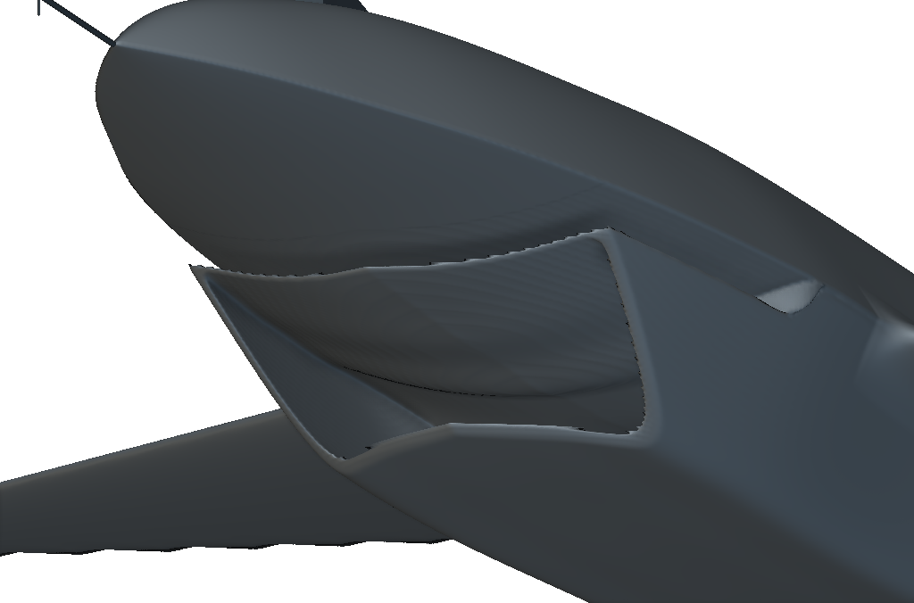
A pointed splitter inside the diverter gap
The splitter follows the user's red planform markup. Its tip starts at source x = -2.600000 and widens aft to x = -1.590268.
The original fraction is c(u) = 0.15u + 0.75u² + 0.10u³. It remains unchanged through the forward half of the tip-to-aft interval.
A native C2 Ramp supplies b(u) from zero at u=0.5 to one at u=1. The half-width becomes w × ((1-b) × m × c(u) + b).
Here, w is the local fuselage half-width, m is the editable width multiplier, and u follows the start-to-aft interval.
The aft rule reaches w(x) with matching first and second derivatives. The half-interval choice is an RC construction input, without a measured photographic dimension.
The splitter continues at the body width behind this visible join. Its cap lies at the existing buried-cowl end. Current native containment checks must establish that this cap is buried.
Current native tests pass forward-profile preservation, aft derivative convergence, and sampled cap containment. Finite samples do not establish continuous containment or whole-surface smoothness.
The upper and lower limits follow the fuselage underside and inlet roof. A small 0.003-source-unit field overlap places each attachment inside its existing wall. The field value is not a certified physical overlap distance.
The main inlet cavity is subtracted after the splitter and root blends are added. Current finite tests check confinement and passage membership.
Start station, aft station, width multiplier, and inlet-roof offset remain editable. The width multiplier affects the forward profile; the aft rule converges to the local fuselage width.
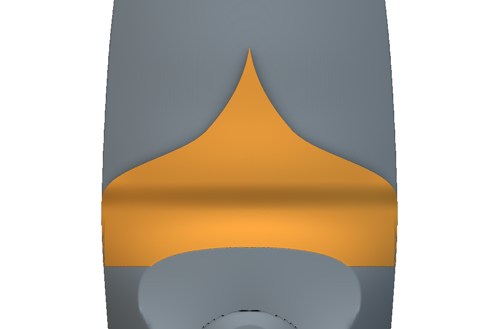
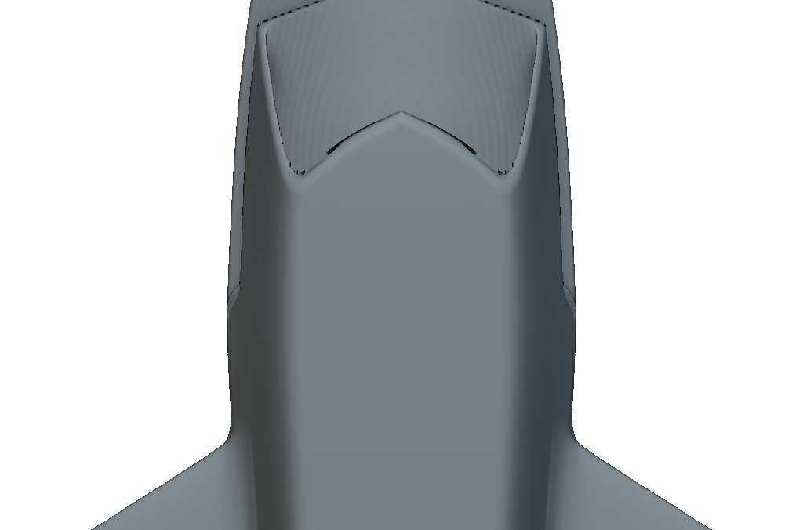
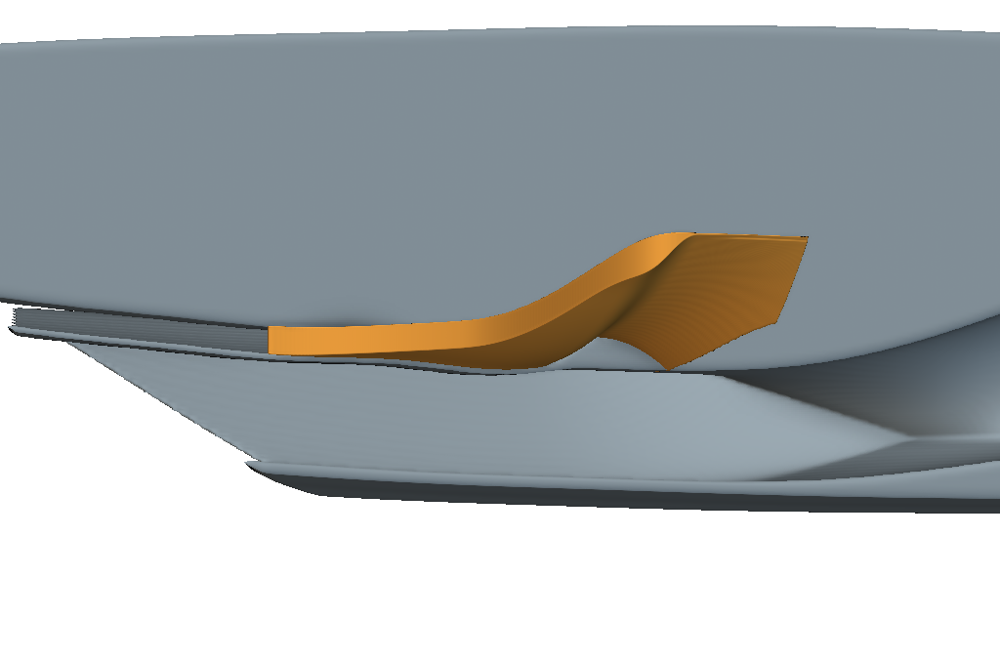
The Group5 notebook supplied the conic-field construction pattern. The Fuse-Wing study supplied guide-spline and conic-sweep examples. Their aircraft dimensions were not copied.
02Blend the lifting-surface roots into the fuselage
The wing, horizontal tail, and fin join one native airframe body. Each root uses a local C2 polynomial field blend.
The blend support follows the fuselage side guide or crown guide and the panel center plane. It tapers to zero outside the root region.
The native C2 Ramp retains the leading-edge blend-size control at 24.841609 mm. It decreases to 3.175 mm (1/8 in) at the trailing edge and clamps outside the root chord. Both endpoints remain editable. These values specify the blending field, not measured fillet radii.
The leading-edge control retains its notebook name, Wing root blend size. The new trailing-edge control is Wing TE root blend size.
The horizontal tail and fin keep their existing editable blend sizes. Their defaults come from the source root-section thickness parameters.
The main cavity and diverter side passages are cut after the additive blends. Native field checks and the cutaway inspect the resulting passage.
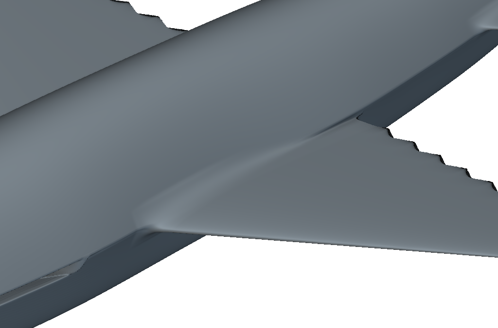
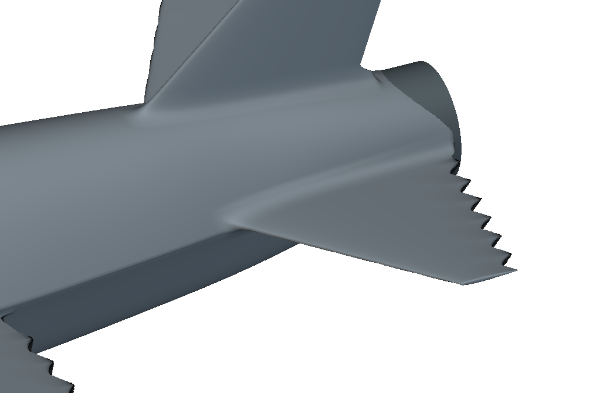
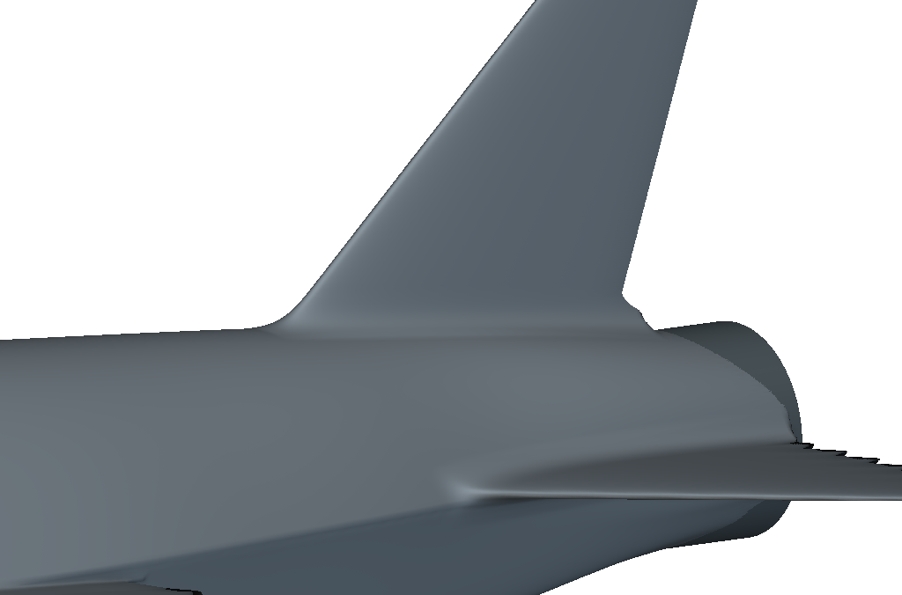
03Place conceptual internal allocations
13 editable allocation envelopes are placed at the nominal 16 ft span.
The arrangement includes generic propulsion, camera or instrumentation, electronics, energy storage, actuators, and stowed landing-gear bays.
Colored bodies and editable center and size controls support a first packaging review. They are hidden in the normal exterior view.
Open the editable internal arrangement · Open the deployed-gear illustration
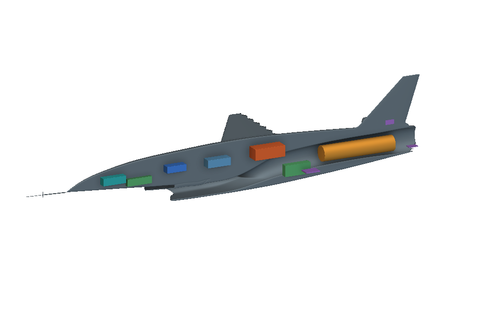
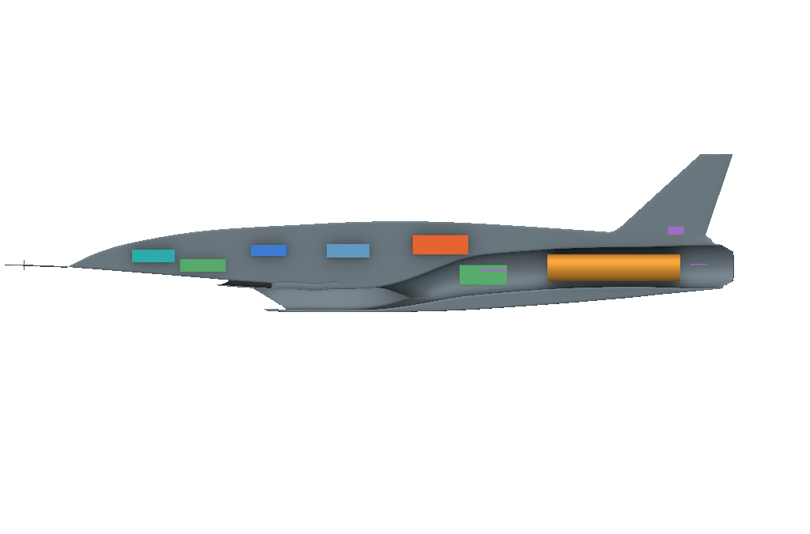
The table gives nominal allocation extents at 16 ft span. The cylindrical engine uses its length and two equal diameters. Other allocations use box extents.
Center and size controls refer to the 16 ft baseline. Changing the main wingspan scales the complete arrangement.
These dimensions are editable concept choices, not measured hardware sizes or verified available space.
A separate host reference check found no overlaps in 78 allocation bounding-box pairs. Its sampled outer-reference and non-engine gross duct/gap screens pass. Source and checker hashes match. This check does not evaluate the native cavity or establish hardware, skin, or structural clearance.
The supportive host result is _agent/rc_internal_layout_placement.json. It supplements the independent native center-sign checks.
The engine envelope intentionally occupies the modeled passage. The exterior opening checks do not describe flow through an installed propulsion system.
No engine, actuator, payload, battery, or landing-gear hardware has been selected. The model does not verify mounts, access, wiring, thermal clearances, mass, or center of gravity.
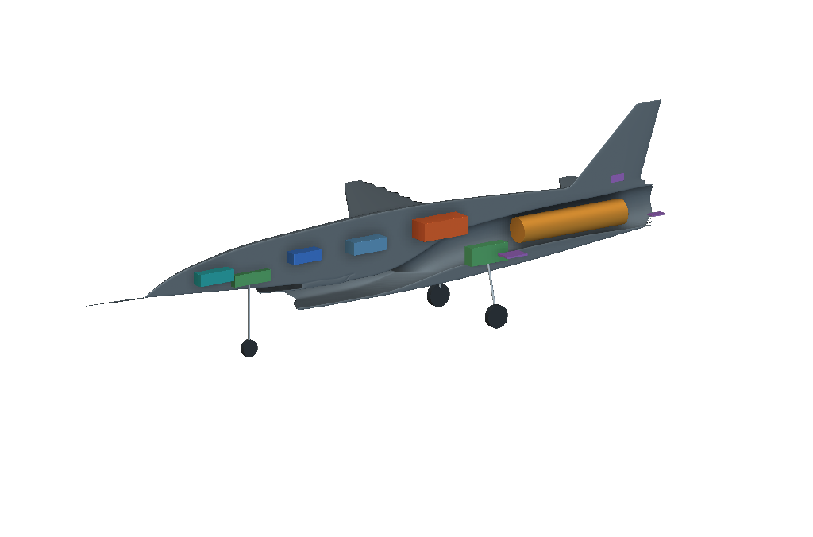
The stowed gear bodies allocate bay space. The separate illustration uses charcoal wheels and light-gray struts.
The wheel and strut geometry does not define retraction motion or an installed gear design.
04Geometry and parameter verification
The previous inlet evidence bridge is historical and is not used for current acceptance. The revised geometry requires current recipe-linked native fixture results. Earlier results retain their original hashes in the revision archives.
The earlier bridge remains in _agent/rc_unchanged_evidence.json. Archived native results keep their original source hashes.
The current wing translation and HStab span use fresh native checks. Their control readbacks must match the current recipe literals, including units.
The wing test compares 12 corresponding point pairs before and after translation. The tail test samples six interior points, six exterior points, and both tip boundaries.
The numerical field tolerance is 1e-08 m at native construction scale. It is not a physical fit or installation-clearance tolerance.
The forward-junction check evaluates five dimensionless transition weights at their current start, midpoint, and end stations. Metadata coordinates must agree with the source recipe.
The aft-splitter check preserves the forward cubic and compares the width with the local fuselage guide at the visible aft join.
Four decreasing step sizes test slope and normalized-curvature convergence. Native length calibration separates field lengths from dimensionless derivatives.
Cap-region samples evaluate the uncapped attachment field against the cowl and forebody before the splitter is added. Using the uncapped field prevents the cap plane from hiding a protrusion.
Separate conic residuals check probe placement, and material witnesses prevent an empty sampled cap from passing containment. Current values are reassessed from rc_native_checks.json using rc_splitter_aft_merge_metadata.json.
These finite checks do not certify a continuous tangent surface, physical clearance, or airflow. Both bottom and oblique views remain required.
The wing Ramp check evaluates seven positions, including both endpoint clamps. It checks positive size, decreasing values, endpoint residuals, and the applied blend-size field.
Ramp values use RC length units. These scalar checks supplement the separate root material and outside-support tests.
The earlier centerline gap checks passed while the lip contacted the fuselage away from the centerline. The user's underside view exposed that missed condition.
The lateral test passes its saved acceptance checks at 78 gap samples. Native run linked to the current source recipe; artifact hashes match.
The runner checks body-field signs, sample placement on the underside, the guarded roof boundary, and opposite field signs above and below the underside.
Section: native signed-span conic at rho 0.5. Candidate unweighted quadratic through the native conic's three control expressions at rho=0.5. This interpretation is accepted only if native surface residuals and above/below signs pass.
Evidence is stored in _agent/span_gap_check_results.json.
Finite body-field samples across the front gap at two stations, through 99% of forebody half-width. Actual native surface residuals and above/below signs validate section placement. This is not a continuous minimum-clearance proof or aerodynamic analysis.
Underside obliques inspect the marked locations. Additional elevated and grazing views check both sides. The highlight must turn continuously from the lip into the cheek without a sharp shelf.
The saved visual review passes for the current notebook and images.
Required review coverage includes both underside obliques, front, inlet, elevated, cutaway, and overview views. It also includes each root blend, splitter planform and gap, and two internal-layout views.
The front inspection checks the smooth underside arc from the center to both chines. The original swept, pointed lower lip is retained.
The lower-cowl inspection checks continuity at the former oval protrusion.
The dense passage probes run in a separate verification notebook. They are removed from the interactive model to avoid repeating them during edits.
The retained output geometry graph and its literal inputs are unchanged between these copies. Their structural hashes match in the saved pruning record.
The inlet lip gap change-and-reset check uses an exact ten-variable dependency fixture. The report accepts a current run or verified unchanged dependencies.
This test measures the gap-field dependencies. It does not verify a live change and reset of the complete model.
The center-gap splitter fixture has separate acceptance conditions. It checks deliberate material at four aft stations and open samples in both lateral passages.
Additional samples check confinement above, below, outboard, and beyond the splitter ends. Main-cavity samples check that the splitter leaves those points open.
The fixture uses the actual conic section to place its samples. Native surface residuals, above-and-below signs, and the roof boundary check that placement.
Evidence is stored in _agent/splitter_arrangement_check_results.json. Source, guide, fixture, and numeric checks remain required. Retained runs also require exact unchanged dependencies.
The earlier lateral-gap fixture samples stations ahead of the new splitter. It remains an inlet-lip separation check; deliberate splitter occupancy is checked separately.
The root checks require an added-material witness near each enabled root. They also compare field values at outer-panel and forward-inlet samples outside blend support.
The outside-support tolerance is a numerical field-equality criterion. These checks do not establish a fillet radius, complete smoothness, or aerodynamic performance.
Internal allocation checks place each center inside its own body. They do not test mutual intersections, fit within the airframe, or installation clearances.
The original duct check uses fixed offsets around the downstream circular-section guide. That guide does not define the midpoint of every transitional cavity section.
Two of 200 fixed-offset points lie above the actual cavity: normalized source x = -0.939744, -0.748718. Both are behind the splitter and outside its material. All 40 center, 80 lateral, and 40 lower points are open. The original fixed-cross criterion is not met. Its diagnostic result remains a failure. Native run linked to the current source recipe; artifact hashes match.
The table keeps this diagnostic separate from the section-based membership test. Earlier results do not substitute for current recipe-linked native evidence.
The replacement placement method intersects the actual native cavity with vertical and horizontal lines. Two intersections on each line establish its wall positions.
Five cross probes lie about the vertical midheight. Their radius is one quarter of the smaller section height or width.
The current run uses eight exact five-station native partitions, followed by a separate current-body evaluation. Four geometric metrics use host arithmetic on fresh native coordinates. The report independently recomputes these reductions.
The original full-fixture timeout remains recorded. Two completed native batches reported logout errors after saving valid outputs. Their nonzero exit codes remain in the execution records.
Current evidence is _agent/native_section_corridor_results.json. The original per-point diagnostic remains in _agent/corridor_diagnostic_results.json.
The section fixture evaluates 200 probes. The separate final-union test evaluates 30 points along the original passage centerline.
Positive body fields and negative cavity fields establish membership at these points. The section fixture uses the native construction scale of 100 mm per source unit, before RC scaling.
Reported field residuals are native numerical checks, not RC installation clearances. Transformed fields need not be distance fields.
Finite samples do not prove clearance everywhere between stations or around each cross. The cutaway provides a separate visual check of the modeled passage.
The raked-mouth field is divided by one plus the absolute rake factor before corner blending. This preserves its zero boundary but can change the rounded junction locally.
A positive factor of 0.25 scales the final fuselage field after cavity subtraction to reduce ray-marching artifacts. It preserves the zero surface and material signs.
These rescalings do not create a certified distance field. The cutaway isolates the fuselage and outlet sleeve for inspection.
A separate positive factor of 0.25 scales the clipped inspection field. It preserves the cutaway zero surface and does not change the delivered geometry.
The table below compares fitted guide coordinates with sampled targets. Values are derived at the 16 ft span. They do not bound the complete surface error.
The fuselage width, crown, and chine targets come from the supplied drawing. The inlet target uses the revised smooth contour.
Current recipe controls: Wing longitudinal offset = 154.104300 mm aft; HStab span multiplier = 0.919057.
The wing offset is an absolute RC length. The tail multiplier scales the original horizontal-tail span about the centerline.
Changes to a guide alter the resulting implicit surface. The baseline retains the drawing's symmetric, very thin visual wing section.
Open native nTop model05Initial aerodynamic setup
AVL uses the drawing's wing, tailplane, and fin planforms with the current placement controls. A symmetric camber line represents each section.
The wing continues to centerline for the gross reference area. AVL reports induced drag for these lifting surfaces only.
The cowl junction, splitter, internal cavity, and root blends are excluded from both aerodynamic models. These geometry edits do not change their analyzed inputs.
The candidate-twelve AVL and XFOIL runs are retained. Neither solver was rerun for this revision. The current analyzed controls, six regenerated AVL inputs and command streams, references, and all result files match the sealed candidate-twelve archive. The four XFOIL section inputs and 16 raw files also match. Input-equivalence record.
The wing reference area, span, and mean chord stay fixed. These values compare the same angle, not the same lift. The moment reference remains at [0, 0, 0] m. It is not a supplied center of gravity, and this run does not establish trim or stability margin.
AVL includes lifting surfaces only. It excludes the fuselage, root blends, inlet, splitter, internal layout, and gear. This screen does not validate cavity flow or an engine installation. Preserved study data.
XFOIL uses the symmetric section equation from the drawing. Each section runs in isolated two-dimensional flow at its local chord Reynolds number.
The section results are separate from the AVL results. They are not coupled into a viscous whole-aircraft model.
06AVL: four parameter combinations
The design of experiments varies wing tip chord by -10% and +10%. It also varies tip twist between -2° and 0°.
These are exploratory factor levels. The baseline remains at a chord multiplier of 1.00 and zero twist. Wing span stays fixed.
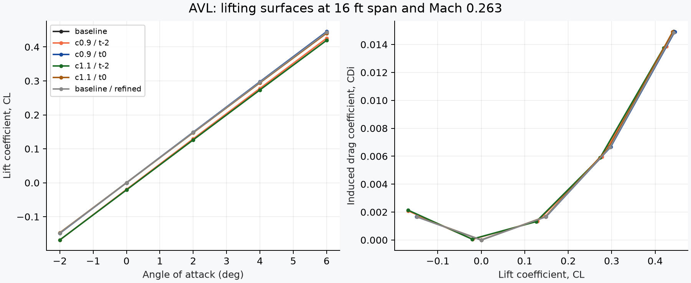
Negative tip twist reduces lift at the same angle of attack. Its lower induced drag at 2° also reflects the lower lift.
The sweep does not establish a preferred design at equal required lift. Mass, CG, and a trim condition are needed for that comparison.
The baseline refinement changes CL by 0.020% and CDi by -0.372% at 2°. This checks numerical sensitivity within the AVL model.
The standard run uses 12 chordwise panels and spanwise interval counts based on 24. The refined run uses 14 and 30. Each interval has at least four spanwise panels.
Download trade table (CSV)07XFOIL: section thickness trade
The section trade compares the baseline thickness with a 1.5 multiplier. Root and tip sections retain their respective baseline chords.
Free transition uses Ncrit = 9. This is an assumption for the initial study. Surface roughness and transition need separate sensitivity checks.
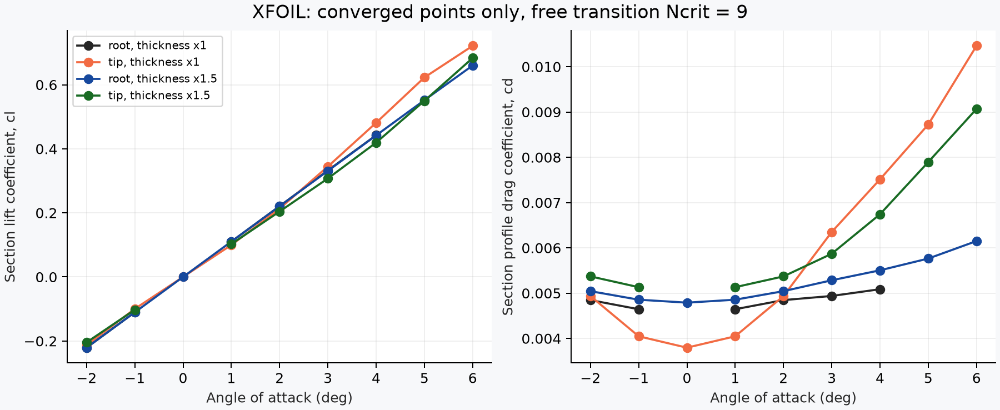
The baseline root case did not converge at 0°, 5°, or 6°. The thickened tip case did not converge at 0°. These points remain missing.
These solver failures do not establish stall angles. The study makes no maximum-lift or stall-margin claim.
08Use the model for the next RC design pass
The notebook provides editable exterior, cavity, and conceptual allocation geometry. It does not include internal structure, propulsion sizing, control authority, flutter, or load verification.
Photo comparison is qualitative. No calibrated similarity percentage has been measured.
Lateral-check scripts: tools/prepare_span_gap_check.py prepares the fixture. tools/run_span_gap_check.py runs it inside nTop and writes the measured pass statuses.
09Sources and reproducibility
Geometry source: the user-supplied [local path omitted]. Its normalized proportions are an appearance reconstruction, not released Fury engineering dimensions.
Exterior references: user-supplied inlet photographs, a flight photograph, and a front markup guide this revision. Figure 2 embeds reference/inlet_photos/inlet_closeup.jpg. These photographs do not document the internal duct.
Construction references: Brad GBI CCA 120125_DH_Areas_revBR4_Structure-Camber.ntop and Fuse-Wing_R1.ntop. Both were read without modification.
Solver methods: MIT AVL and MIT XFOIL. The installed AVL identifies version 3.40. Raw command streams, geometry files, polar files, and logs are retained in rc_aero/.
Rebuild scripts: tools/build_rc_native.py, native_inlet_duct.py, native_gap_divider.py, native_root_blends.py, native_root_blend_checks.py, native_internal_layout.py, run_rc_native.py, finish_rc_native.py, tools/prune_interactive_checks.py, tools/prepare_gap_fixture.py, tools/run_gap_fixture.py, tools/prepare_splitter_arrangement_check.py, tools/run_splitter_arrangement_check.py, tools/prepare_corridor_diagnostic.py, tools/run_corridor_diagnostic.py, tools/prepare_native_section_corridor.py, tools/run_native_section_corridor.py, tools/check_internal_layout_placement.py, tools/verify_rc_unchanged_evidence.py, tools/verify_rc_aero_unchanged_evidence.py, tools/build_rc_photo_section.py, tools/make_rc_views.py, tools/record_rc_execution.py, run_rc_aero.py, plot_rc_results.py, and make_rc_report.py. Host Python scripts run through uv. Native imports and the gap fixture test run inside nTop's Python Console.
The pruning script preserves validation/Fury_RC_Native_Verification.ntop as the verification companion. Its record stores both file hashes and compares output geometry and literal hashes with the interactive model.
Fury_RC_Native.ntop SHA-256: d3e2475f064b6ed273da45dcef9a4aa9ab56487d1681cee4bb663bd6a7b1f0e1
All numerical fit, solver, and verification results in this report are derived or measured locally. RC geometry inputs, internal allocation sizes, atmospheric assumptions, and DOE levels are identified above.